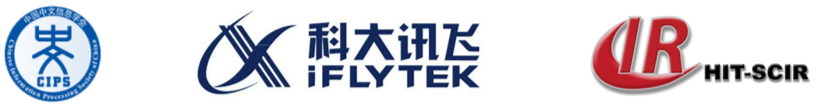
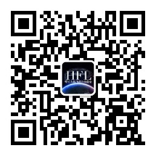

最新新闻 (更多)
2022/9/19 本届评测最终结果已发布，请查看决赛排名。
2022/8/15 资格审查通过名单已通过邮件发送给队伍联络人邮箱，请注意查收并准备决赛系统，详见邮件通知。
2022/7/29 考虑到原资格赛截止时间在周末凌晨，经过组委会商定，资格赛截止时间将延长12小时，新截止时间为8月1日中午12点（北京时间）。
2022/7/14 距离资格赛结束还有两周时间，请选手抓紧时间调整系统并确保在截止日期前提交结果。同时需要注意结果对应的源程序压缩包（含模型、代码、资源等）应小于10G。
2022/6/20 发布资格审查流程，请参赛选手仔细阅读资格审查流程。同时注意时间节点，资格审查提交时间为8月1日-7日，公布审查结果为8月15日。决赛阶段时间不变。
2022/6/15 针对评测中的相关问题，建议参赛选手查看常见问题。
第五届“讯飞杯”中文机器阅读理解评测（CMRC 2022）

从2017年开始，全国计算语言学学术会议（CCL）计划举办评测活动。作为全国计算语言学学术会议（CCL）的系列评测，今年将继续举办第五届“讯飞杯”中文机器阅读理解评测 (The 5th Workshop on Chinese Machine Reading Comprehension, CMRC 2022)，并将于2022年10月与第二十一届全国计算语言学学术会议（CCL 2022）共同召开。
第五届“讯飞杯”中文机器阅读理解（CMRC 2022）的任务是可解释性阅读理解。给定一个篇章以及和篇章相关的问题，参赛队伍需要设计一个可以同时抽取答案和佐证依据的机器阅读理解系统。根据阅读理解类型分为以下两个赛道：
- 抽取型阅读理解赛道：答案和佐证依据均是篇章中的某个连续片段
- 选择型阅读理解赛道：答案是从若干个候选选项中选出，佐证依据是篇章中的某个连续片段
本次评测的难点在于，组委会并不提供带标注的训练集合。因此选手需要设计无监督或弱监督的机器阅读理解系统来完成答案和佐证依据的抽取。关于详细的任务设置请查看：任务介绍
本届中文机器阅读理解评测由认知智能国家重点实验室、哈尔滨工业大学社会计算与信息检索研究中心（HIT-SCIR）、中科讯飞互联（北京）信息科技有限公司联合承办，由科大讯飞股份有限公司冠名赞助。本届评测旨在进一步促进中文机器阅读理解研究及发展并且为相关领域学者提供一个良好的沟通平台。在此，CMRC 2022评测委员会诚邀各界人士参加本次评测活动！
奖项设置
本届评测分别为两个赛道（抽取式阅读理解和选择型阅读理解）颁奖。各赛道分别颁发：
| 奖项 | 数量 | 奖励 |
| 冠军 | 一名 | 奖金 10,000元 + 荣誉证书 |
| 亚军 | 一名 | 奖金 5,000元 + 荣誉证书 |
| 季军 | 一名 | 奖金 3,000元 + 荣誉证书 |
由中国中文信息学会计算语言学专委会（CIPS-CL）为获奖队伍颁发荣誉证书，由科大讯飞股份有限公司和为获奖队伍提供奖金。 所有列举的奖金数额为税前金额。
所有进入决赛的队伍将获赠由电子工业出版社出版的图书《自然语言处理：基于预训练模型的方法》（每支队伍一本）。
重要时间
以下是初步的时间安排（时间可能会有细微变动，请持续关注评测官方网站）：
| 阶段 | 时间 |
|---|---|
| 报名阶段 | 2022年5月18日 —— 2022年7月31日 |
| 资格赛阶段 | 2022年6月1日 —— 2022年8月1日 （2022年6月13日开启榜单，2022年8月1日12时关闭榜单） |
| 资格审查（提交阶段） | 2022年8月1日 —— 2022年8月7日 |
| 资格审查（公布结果） | 2022年8月15日 |
| 决赛阶段 | 2022年8月16日 —— 2022年8月31日 |
| 公布比赛结果 | 2022年9月中旬 |
| 撰写评测报告 | 2022年9月下旬 |
| 评测研讨会 | 2022年10月14日 —— 2022年10月16日 |
各阶段说明：
- 资格赛阶段：参赛队伍将通过官方平台自助提交开发集结果，取前10名进入到资格审查环节。选手可以在报名之后就开始搭建并优化比赛系统，待榜单开启后提交结果。
- 资格审查阶段：入围队伍需要提交代码以完成资格审查（后续公布详细流程），同时需要提供训练数据来源的详细说明，不符合参赛规则的队伍将失去决赛资格。
- 决赛阶段：资格审查通过的队伍将提交两组系统（一组是资格审查阶段提交的模型，一组是决赛阶段提交的模型），由组委会给出测试集结果，取两组系统测试集“综合F1”指标高的结果作为该队伍的最终评测结果，参与最终的排名。
注：所有截止时间点为北京时间（UTC+8）23:59。
评测报名
请通过以下问卷进行报名（点击链接或扫描下方二维码）：https://wj.qq.com/s2/10202266/6435/
评测组织
评测主席：崔一鸣（哈尔滨工业大学、科大讯飞）、车万翔（哈尔滨工业大学）
组织单位：认知智能国家重点实验室、哈尔滨工业大学社会计算与信息检索研究中心（HIT-SCIR）、中科讯飞互联（北京）信息科技有限公司
赞助单位：科大讯飞股份有限公司
微信公众号
欢迎关注哈工大讯飞联合实验室（HFL）微信公众号。

联系我们
如果有任何与本次评测相关的问题，请随时联系会务组。
评测会务组邮箱： cmrc2022 [at] 126 [dot] com